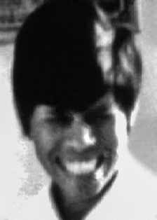

Alceri
Maria
Gomes
da Silva
CIRCUNSTÂNCIAS DA MORTE
Alceri Maria Gomes da Silva morreu em São Paulo, no dia 17 de maio de 1970. Existem algumas informações acerca das possíveis causas de sua morte. A primeira foi transmitida a Valmira, uma das irmãs de Alceri, por um jornalista que afirmou que Alceri teria sido atingida pelas costas em uma emboscada do Destacamento de Operações de Informações – Centro de Operações de Defesa Interna (DOI-CODI) do estado de São Paulo. A segunda versão foi construída a partir dos depoimentos de presos políticos de São Paulo, segundo os quais, as mortes de Alceri e Antônio dos Três Reis Oliveira foram orquestradas e concretizadas por agentes da Operação Bandeirante (OBAN), que invadiram sua casa e os executaram sumariamente. A última versão, relatada a sua irmã mais velha, Talita, por uma companheira de militância de Alceri, apontava que ela havia sido presa e que, na prisão, havia contraído tuberculose, mas que a causa de sua morte haviam sido as torturas a que foi submetida.
De acordo com um relatório assinado pelo então comandante do DOI-CODI do II Exército, major Carlos Alberto Brilhante Ustra, uma equipe do DOI-CODI foi designada a se dirigir ao “aparelho” em que estavam Alceri e Antônio dos Três Reis Oliveira para prendê-los. Ao chegar ao local, os agentes teriam realizado uma revista minuciosa e teriam encontrado um alçapão onde os dois estavam escondidos. Ao serem descobertos, teriam atirado na direção dos agentes do DOI-CODI, que os mataram em seguida.
Em depoimento ao jornal Folha de S.Paulo, divulgado em 8 de dezembro de 2010, o tenente-coronel Maurício Lopes Lima, que foi chefe de buscas da Oban, afirmou que estava presente na operação que resultou na morte de Alceri e Antônio, porém responsabilizou a equipe chefiada pelo capitão Francisco Antônio Coutinho e Silva pelas execuções. Ele ressaltou que teria sido informado sobre um alçapão existente no “aparelho” onde estavam Antônio e Alceri e que, ao tentar abri-lo, teria sido ferido por Antônio. Confirmou ainda que Antônio teria morrido em confronto com os policiais e que Alceri morreria logo a seguir, a caminho do hospital. A versão do DOI-CODI de São Paulo foi reproduzida em relatórios do Ministério da Aeronáutica e do Ministério da Marinha, que repetem que Alceri teria sido morta no dia 17 de maio de 1970, ao resistir à prisão no “aparelho” em que se encontrava.
Além disso, consta que nesse mesmo dia o Departamento de Ordem Política e Social de São Paulo (DOPS/SP) requisitou a realização de exame pelo Instituto Médico-Legal de São Paulo (IML/SP), e o exame registra que a morte ocorreu em função de um tiroteio com a polícia. A morte de Alceri foi comunicada aos seus familiares pelo detetive da Delegacia de Polícia de Canoas, conhecido como “Dois Dedos”, que na ocasião, ameaçou a família de Alceri: caso fizessem algo para desvendar a morte da militante, também seriam mortos. A família não teve acesso à certidão de óbito, nem foi comunicada sobre o local onde Alceri havia sido enterrada. Posteriormente, soube-se que Alceri e Antônio dos Três Reis Oliveira foram sepultados no Cemitério de Vila Formosa. As modificações na quadra do cemitério, feitas em 1976, não deixaram registro de para onde foram os corpos dali exumados.
Alceri Maria Gomes da Silva died in São Paulo, on May 17, 1970. There is some information about the possible causes of her death. The first was transmitted to Valmira, one of Alceri's sisters, by a journalist who stated that Alceri had been shot in the back in an ambush by the Information Operations Detachment – Internal Defense Operations Center (DOI-CODI) in the state of São Paulo. The second version was constructed based on the testimonies of political prisoners from São Paulo, according to whom the deaths of Alceri and Antônio dos Três Reis Oliveira were orchestrated and carried out by agents from Operação Bandeirante (OBAN), who invaded their home and summarily executed them. The last version, reported to her older sister, Talita, by a fellow activist of Alceri, pointed out that she had been arrested and that, in prison, she had contracted tuberculosis, but that the cause of her death had been the torture to which she was subjected.
According to a report signed by the then commander of DOI-CODI of the II Army, Major Carlos Alberto Brilhante Ustra, a DOI-CODI team was assigned to go to the “apparatus” where Alceri and Antônio dos Três Reis Oliveira were in to arrest them. Upon arriving at the location, the agents carried out a thorough search and found a trap door where the two were hiding. When discovered, they allegedly shot at the DOI-CODI agents, who then killed them.
In a statement to the newspaper Folha de S.Paulo, released on December 8, 2010, Lieutenant Colonel Maurício Lopes Lima, who was head of searches at Oban, stated that he was present in the operation that resulted in the deaths of Alceri and Antônio, but held the team led by Captain Francisco Antônio Coutinho e Silva responsible for the executions. He highlighted that he had been informed about a trap door in the “apparatus” where Antônio and Alceri were and that, when trying to open it, he had been injured by Antônio. He also confirmed that Antônio had died in a confrontation with the police and that Alceri would die shortly afterwards, on the way to the hospital. The DOI-CODI version of São Paulo was reproduced in reports from the Ministry of Aeronautics and the Ministry of the Navy, which repeat that Alceri was killed on May 17, 1970, when resisting arrest in the “apparatus” in which she was found.
Furthermore, it appears that on the same day the Department of Political and Social Order of São Paulo (DOPS/SP) requested that an examination be carried out by the São Paulo Medical-Legal Institute (IML/SP), and the examination records that the death occurred as a result of a shootout with the police. Alceri's death was communicated to his family by the detective from the Canoas Police Station, known as “Dois Fingers”, who at the time threatened Alceri's family: if they did anything to uncover the activist's death, they would also be killed. The family did not have access to the death certificate, nor were they informed about the place where Alceri had been buried. Later, it became known that Alceri and Antônio dos Três Reis Oliveira were buried in the Vila Formosa Cemetery. The modifications to the cemetery block, made in 1976, left no record of where the exhumed bodies went.
Alceri Maria Gomes da Silva murió en São Paulo, el 17 de mayo de 1970. Hay algunas informaciones sobre las posibles causas de su muerte. La primera fue transmitida a Valmira, una de las hermanas de Alceri, por un periodista que afirmó que Alceri había recibido un disparo en la espalda en una emboscada del Destacamento de Operaciones de Información – Centro de Operaciones de Defensa Interna (DOI-CODI) en el estado de São Paulo. La segunda versión se construyó a partir de testimonios de presos políticos de São Paulo, según quienes las muertes de Alceri y Antônio dos Três Reis Oliveira fueron orquestadas y llevadas a cabo por agentes de la Operação Bandeirante (OBAN), que invadieron su casa y los ejecutaron sumariamente. La última versión, comunicada a su hermana mayor, Talita, por un compañero activista de Alceri, señalaba que ella había sido detenida y que, en prisión, había contraído tuberculosis, pero que la causa de su muerte había sido las torturas a las que fue sometida.
Según un informe firmado por el entonces comandante del DOI-CODI del II Ejército, mayor Carlos Alberto Brilhante Ustra, un equipo del DOI-CODI fue asignado para ir al “aparato” donde se encontraban Alceri y Antônio dos Três Reis Oliveira para arrestarlos. Al llegar al lugar, los agentes realizaron una exhaustiva búsqueda y encontraron una trampilla donde se escondían los dos. Al ser descubiertos, presuntamente dispararon contra los agentes del DOI-CODI, quienes luego los mataron.
En una declaración al periódico Folha de S.Paulo, publicada el 8 de diciembre de 2010, el teniente coronel Maurício Lopes Lima, jefe de búsquedas en Oban, afirmó que estuvo presente en la operación que tuvo como resultado la muerte de Alceri y Antônio, pero responsabilizó de las ejecuciones al equipo dirigido por el capitán Francisco Antônio Coutinho e Silva. Destacó que había sido informado sobre una trampilla en el “aparato” donde estaban Antônio y Alceri y que, al intentar abrirla, Antônio lo había herido. También confirmó que Antônio había muerto en un enfrentamiento con la policía y que Alceri moriría poco después, camino al hospital. La versión DOI-CODI de São Paulo fue reproducida en informes del Ministerio de Aeronáutica y del Ministerio de Marina, que repiten que Alceri fue asesinada el 17 de mayo de 1970, al resistirse al arresto en el “aparato” en el que se encontraba.
Además, parece que el mismo día el Departamento de Orden Político y Social de São Paulo (DOPS/SP) solicitó la realización de un examen por parte del Instituto Médico Legal de São Paulo (IML/SP), y el examen constata que la muerte se produjo como resultado de un tiroteo con la policía. La muerte de Alceri fue comunicada a su familia por el detective de la Comisaría de Canoas, conocido como “Dois Fingers”, quien en ese momento amenazó a la familia de Alceri: si hacían algo para descubrir la muerte del activista, también los matarían. La familia no tuvo acceso al certificado de defunción ni fue informada sobre el lugar donde había sido enterrado Alceri. Posteriormente se supo que Alceri y Antônio dos Três Reis Oliveira fueron enterrados en el cementerio de Vila Formosa. Las modificaciones a la manzana del cementerio, realizadas en 1976, no dejaron registro del lugar adonde fueron destinados los cuerpos exhumados.